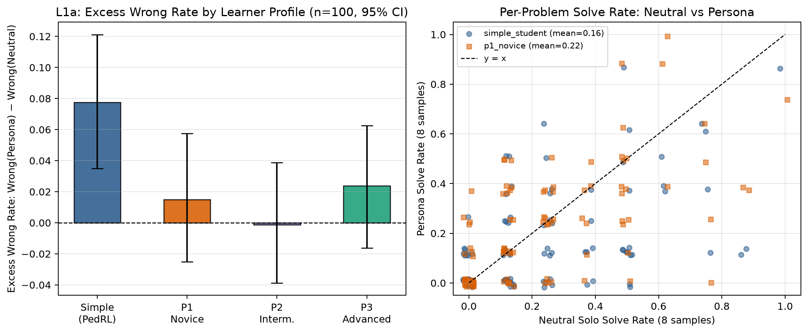
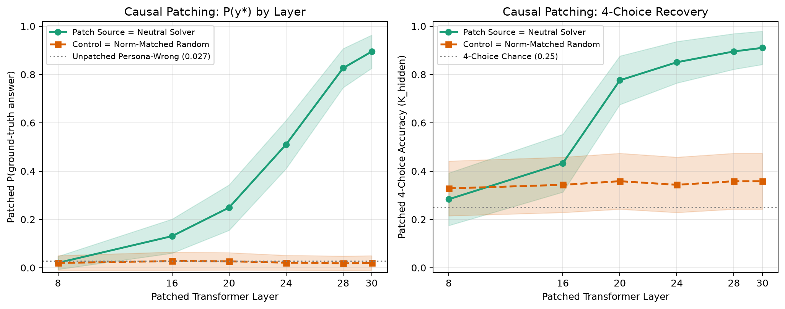
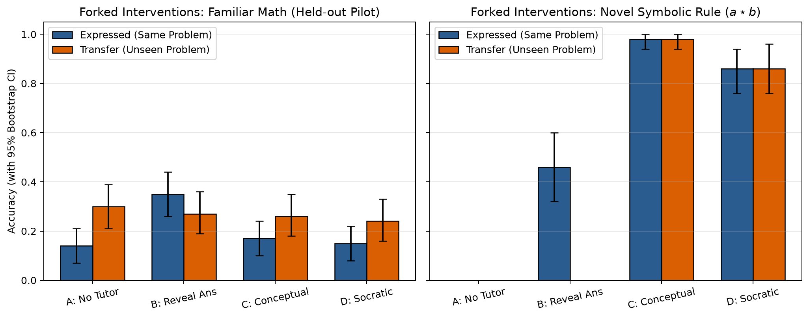

The question
humans& train &Tutor by rewarding it for how much a simulated learner, Persimmon, learns. Their own caveat is the one that matters: if the simulator differs from real students, the tutor can exploit that difference, and the gains stay in simulation. Their published checks look at what the learner says. Moves, expressed affect, error rates. None of those open the model.
I cannot open Persimmon. It is an API on a 550B model. So this is a pilot on models whose weights fit one GPU: Llama-3.1-8B-Instruct as the student, and UserLM-8B as an open trained user model. The question is the one their text metrics cannot ask. At the moment a reward would fire, was the answer copied, computed, or already there?
A persona creates wrong answers
On 100 held-out math problems, Llama solves 23.8% with no student persona. The PedagogicalRL simple_student prompt, the one that asks the model to let the teacher guide it, adds 7.8 points of wrong answers. The interval is [+3.5, +12.1]. Three richer misconception prompts do nothing once the model is allowed to reason. An error rate can be performed. Writing a wrong belief into the prompt is a weak way to get a learner.
Figure 1
Only the simple student persona clears zero

The answer is still in there
On the 18 solvable problems where that persona then gives the wrong answer, a 4-choice readout of the residual hits the correct answer 72% of the time before the solution is written. The interval is [53%, 88%]. Chance is 25%. After the wrong chain of thought, the token probability falls to 2.5%.
The causal check is the one I trust. Across 67 of those trajectories, patching the neutral residual back into the persona run moves the correct-token probability from 2.7% to 89.5% by layer 30. A norm-matched noise patch stays near 2%. The effect starts around layers 16–20. The wrong answer is a performance. One vector puts the right token back.
On a rule the model has never seen, the same readout is 0% when the rule is withheld and 100% once the rule is in the prompt. The lens is not inventing a number that was never there.
Figure 2
A neutral residual restores the correct token

Leaking and teaching come apart
The reward in this setup is whether the student gets the problem right after the tutor speaks. On ordinary math that signal cannot tell copying from learning. On a synthetic operation the model has never seen, it can. n=50.
Stating the number: 46% on that problem, 0% on a new pair. Stating the rule: 98% on both. Worked examples of other inputs: 86% on both. A judge that only reads the transcript of the training problem scores the leak as learning.
On familiar math, n=100, revealing the answer, explaining, and worked examples all fail to transfer. The split is a property of items the student could not have memorized.
Figure 3
Same problem versus a new pair

A trained user model copies
UserLM is a user model with open weights, not a prompted persona. At an Answer: slot, stating the number lifts a 4-choice readout to 0.71. Stating the rule leaves it at 0.00. On a new pair, after the original number is spoken, Llama picks that leaked number 24 times out of 24 and the new answer 0 times. UserLM picks the leaked number 58% of the time, interval [38%, 79%], and the new answer 0% of the time. Patching the "number was stated" residual into a blank transfer prompt drags the old number in.
UserLM's free replies are not evidence about withholding. In the later checks they are the end-of-conversation token, or a copy of the prompt. The commit slot is the measurement. Llama's free replies often write the right sum and stop before adding it, so a parser that demands a finished total undercounts them.
What this does not show
These are Llama-3.1-8B and UserLM-8B. They are not Persimmon and not &Tutor. The 72% cell is 18 problems. The tutor-side question, whether an RL tutor represents that the student is wrong more sharply than its base model, is unfinished. Nothing here shows that a tutor has learned to exploit the performed answer. A direct-question and opening-turn version of their information-sharing test did not reproduce the oversharing in the Persimmon post, so I am not claiming that.
The measurement their current suite does not include, and that the API can still run, is the novel rule. At the moment the reward fires, was the answer copied, computed, or already there?